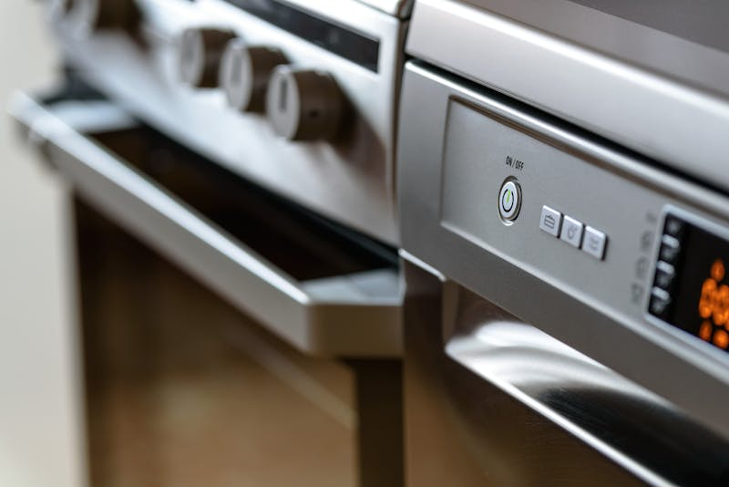
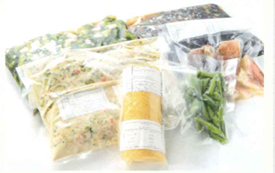
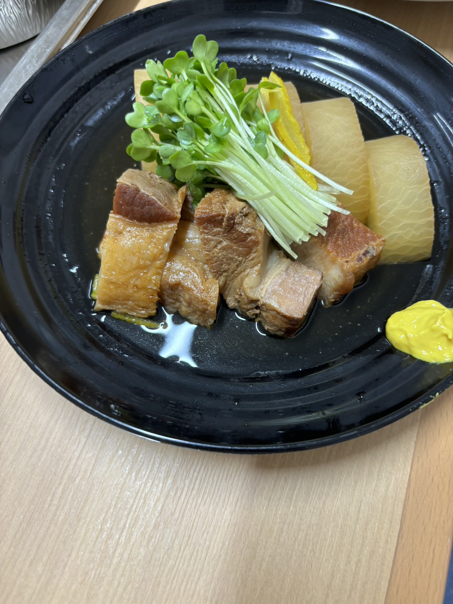

Industries
ホテルから介護施設、学校、自衛隊まで。KMSはさまざまな食事現場でのノウハウを活かし、それぞれの課題に最適な解決策を提供します。
Our Strength
創業59年・従業員180名・四国・九州4拠点のセントラルキッチン稼働。
地方発・全国水準のフードサービスを提供します。
中央調理室で一括調理し、急速冷却後に袋詰めまたは盛り付けを実施。チルド配送で衛生を保ちながら、安定した味を実現します。
宇和島・松山・丸亀・別府の4拠点で稼働。大量調理でもブレない品質と、万が一の際のバックアップ体制を整えています。
宇和島の卵醤油ダレ鯛めし・松山の炊き込み鯛めし・香川の骨付き鳥・大分のだんご汁——愛媛の2つの鯛めしをはじめ、その土地ならではの料理を提供できるのは、地元を知るKMSならでは。
Cook-Chill System
加熱調理後、90分以内に3℃以下まで急速冷却。
品質・衛生・効率を同時に高める、KMSの核心技術です。
セントラルキッチンで一括調理
90分以内に3℃以下へ
キッチンで衛生的に包装
温度管理された車両で各施設へ
現場スタッフが配膳・提供



Numbers
創業1967年からの実績
フードサービス専任スタッフ
年間無休で安定供給
宇和島・松山・丸亀・別府
News
FAQ
食事サービスの外部委託・クックチルシステムについてよくいただくご質問をまとめました。
はい、対応しています。朝食ビュッフェ・宴会・レストラン運営代行まで、ホテルの食事をトータルサポートします。クックチルシステムにより少人数スタッフでも高品質な食事を安定提供できます。
加熱調理した食品を90分以内に3℃以下まで急速冷却し、衛生的に保管・配送する技術です。現地の調理スタッフを最小限に抑えながら、品質・衛生・コストを同時に改善できます。
はい、可能です。KMSのクックチル技術と4拠点のセントラルキッチン（宇和島・松山・丸亀・別府）により、現地スタッフを最小限に抑えながら365日・3食の安定供給を実現します。
はい、対応しています。常食・軟食・ミキサー食・ゼリー食など、入居者の状態に合わせた形態別食事を提供します。管理栄養士による栄養管理・制限食・アレルギー対応食にも対応しています。
自社配送エリアは愛媛県全域・香川県（中讃・西讃）・大分県（中部・北部・玖珠町）です。全国への宅配配送にも対応しています。
はい、可能です。セントラルキッチンによる大量調理のスケールメリットと長年の食材調達力により、品質を落とさずコストを最適化します。食材廃棄ロスの低減にも取り組んでいます。
はい、可能です。契約前の試食・サンプル提供に対応しています。複数の関係者にまとめてご確認いただける試食会も実施しています。お気軽にご相談ください。
はい、対応しています。現在の体制・課題をヒアリングした上で、スムーズに移行できるプランをご提案します。まずは無料相談からお気軽にどうぞ。
契約期間の縛りはありません。解約をご希望の場合は、3ヶ月前までにご連絡いただき、双方の合意のもとで対応いたします。
「コスト削減したい」「人手が足りない」「品質を安定させたい」——
どんなお悩みもお気軽にお聞かせください。
10名規模から対応可能。配送エリア外もまずはご相談ください。ヒアリング・見積もり無料。